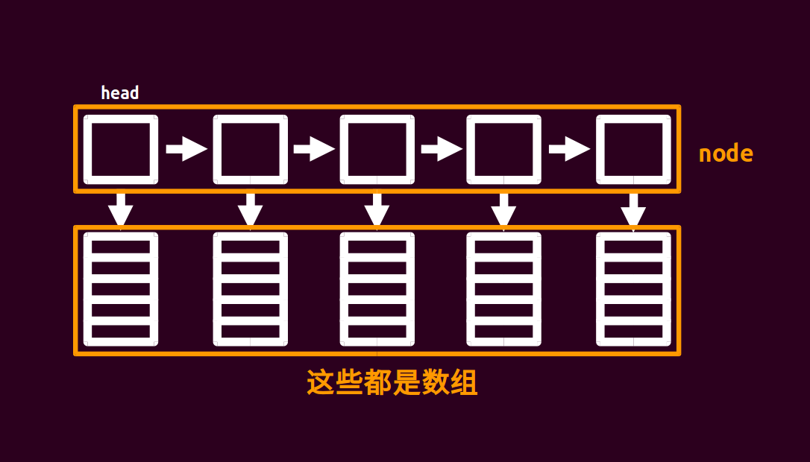

OI Wiki · prijevod · Strukture podatakaOI Wiki · translation · Data structures
Blokovna vezana listaUnrolled linked list

Blokovna vezana lista (unrolled linked list) izgleda otprilike ovako…
Lako je uočiti da je blokovna vezana lista zapravo vezana lista u kojoj svaki čvor pokazuje na jedan niz.
Izvorni niz duljine n podijelimo na \(\sqrt{n}\) čvorova, a niz koji pripada svakom čvoru ima veličinu \(\sqrt{n}\).
Zato strukturu definiramo ovako, kôd je u nastavku.
Pritom sqn označava sqrt(n), tj. \(\sqrt{n}\), a pb označava push_back, tj. dodavanje jednog elementa u ovaj node.
Implementacija
struct node {
node* nxt;
int size;
char d[(sqn << 1) + 5];
node() { size = 0, nxt = NULL, memset(d, 0, sizeof(d)); }
void pb(char c) { d[size++] = c; }
};
Blokovna vezana lista mora podržavati barem: dijeljenje, umetanje i pretraživanje.
Što je dijeljenje? Dijeljenje znači da se jedan node razdvoji na dva manja node-a kako bi veličina svakog node-a ostala blizu \(\sqrt{n}\) (inače se struktura može degenerirati u običan niz). Dijeljenje se izvodi kad veličina nekog node-a premaši \(2\times \sqrt{n}\).
Kako se izvodi dijeljenje? Najprije napravimo novi čvor, zatim zadnjih \(\sqrt{n}\) vrijednosti čvora koji dijelimo kopiramo (copy) u novi čvor, potom tih zadnjih \(\sqrt{n}\) vrijednosti obrišemo iz čvora koji dijelimo (size--) i na kraju novi čvor umetnemo iza čvora koji smo podijelili.
Složenost svih operacija blokovne vezane liste je \(\sqrt{n}\).
Treba spomenuti još nešto. Kako se elementi umeću (ili brišu), \(n\) se mijenja, pa se mijenja i \(\sqrt{n}\). Time se mijenja i veličina bloka – moramo li onda svaki put iznova održavati veličinu bloka?
Zapravo ne: dovoljno je \(\sqrt{n}\) postaviti na fiksnu vrijednost. Primjerice, ako je ograničenje u zadatku \(10^6\), onda \(\sqrt{n}\) postavimo kao konstantu \(10^3\) i više je ne mijenjamo.
list<vector<char>> orz_list;
rope u libstdc++
Uvod
rope iz libstdc++ također igra ulogu blokovne vezane liste; implementiran je perzistentnim balansiranim stablom i omogućuje slučajan pristup te umetanje i brisanje elemenata.
Budući da rope zapravo nije implementiran blokovnom vezanom listom, njegova vremenska složenost nije jednaka složenosti blokovne vezane liste, nego odgovara složenosti perzistentnog balansiranog stabla (tj. \(O(\log n)\)).
Uključuje se ovako:
#include <ext/rope>
using namespace __gnu_cxx;
O bibliotečnim funkcijama koje počinju dvostrukom donjom crtom
U OI-ju dugo nije bilo jasno smiju li se koristiti bibliotečne funkcije koje počinju dvostrukom donjom crtom; CCF je 2021. objavio Dopunsko objašnjenje o ograničenjima uporabe programskih jezika na natjecanjima serije NOI u kojem stoji: „Dopuštena je uporaba bibliotečnih funkcija i makroa koji počinju donjom crtom, osim onih koji izvode izričito zabranjene operacije.” Stoga se rope danas na OI natjecanjima može normalno koristiti.
Osnovne operacije
| Operacija | Učinak |
|---|---|
rope<int> a |
inicijalizira rope (vrlo slično spremnicima poput vector-a) |
a.push_back(x) |
dodaje element x na kraj a |
a.insert(pos, x) |
dodaje element x na položaj pos u a |
a.erase(pos, x) |
briše x elemenata počevši od položaja pos u a |
a.at(x) ili a[x] |
pristupa x-tom elementu od a |
a.length() ili a.size() |
vraća veličinu od a |
Primjer zadatka
Rješenje: Vrlo jednostavan šablonski zadatak. Kôd slijedi:
#include <cctype>
#include <cstring>
#include <iostream>
using namespace std;
constexpr int sqn = 1e3;
struct node { // definicija blokovne vezane liste
node* nxt;
int size;
char d[(sqn << 1) + 5];
node() { size = 0, nxt = NULL; }
void pb(char c) { d[size++] = c; }
}* head = NULL;
char inits[(int)1e6 + 5];
int llen, q;
void readch(char& ch) { // učitaj znak
do cin >> ch;
while (!isalpha(ch));
}
void check(node* p) { // provjera – ne zaboravi podijeliti blok
if (p->size >= (sqn << 1)) {
node* q = new node;
for (int i = sqn; i < p->size; i++) q->pb(p->d[i]);
p->size = sqn, q->nxt = p->nxt, p->nxt = q;
}
}
void insert(char c, int pos) { // umetanje elementa; razmišljaj o tome kao o vezanoj listi
node* p = head;
int tot, cnt;
if (pos > llen++) {
while (p->nxt != NULL) p = p->nxt;
p->pb(c), check(p);
return;
}
for (tot = head->size; p != NULL && tot < pos; p = p->nxt, tot += p->size);
tot -= p->size, cnt = pos - tot - 1;
for (int i = p->size - 1; i >= cnt; i--) p->d[i + 1] = p->d[i];
p->d[cnt] = c, p->size++;
check(p);
}
char query(int pos) { // upit
node* p;
int tot;
for (p = head, tot = head->size; p != NULL && tot < pos;
p = p->nxt, tot += p->size);
tot -= p->size;
return p->d[pos - tot - 1];
}
int main() {
cin.tie(nullptr)->sync_with_stdio(false);
cin >> inits >> q;
llen = strlen(inits);
node* p = new node;
head = p;
for (int i = 0; i < llen; i++) {
if (i % sqn == 0 && i) p->nxt = new node, p = p->nxt;
p->pb(inits[i]);
}
char a;
int k;
while (q--) {
readch(a);
if (a == 'Q')
cin >> k, cout << query(k) << '\n';
else
readch(a), cin >> k, insert(a, k);
}
return 0;
}
An unrolled linked list (block linked list) looks roughly like this…
It is easy to see that an unrolled linked list is just a linked list in which every node points to an array.
We split the original array of length n into \(\sqrt{n}\) nodes, and the array belonging to each node has size \(\sqrt{n}\).
So we define the structure as follows; the code is below.
Here sqn stands for sqrt(n), i.e. \(\sqrt{n}\), and pb stands for push_back, i.e. appending one element to this node.
Implementation
struct node {
node* nxt;
int size;
char d[(sqn << 1) + 5];
node() { size = 0, nxt = NULL, memset(d, 0, sizeof(d)); }
void pb(char c) { d[size++] = c; }
};
An unrolled linked list should support at least: splitting, insertion and lookup.
What is splitting? Splitting means splitting one node into two smaller nodes so that the size of every node stays close to \(\sqrt{n}\) (otherwise the structure may degenerate into a plain array). A split is performed when the size of a node exceeds \(2\times \sqrt{n}\).
How is a split done? First create a new node, then copy the last \(\sqrt{n}\) values of the node being split into the new node, then delete those last \(\sqrt{n}\) values from the node being split (size--), and finally insert the new node right after the node that was split.
Every operation of an unrolled linked list has complexity \(\sqrt{n}\).
One more thing needs to be said. As elements are inserted (or deleted), \(n\) changes, and so does \(\sqrt{n}\). Then the block size changes too – do we really have to maintain the block size every time?
Actually no: just set \(\sqrt{n}\) to a fixed value. For example, if the limit given in the problem is \(10^6\), set \(\sqrt{n}\) to the constant \(10^3\) and never change it.
list<vector<char>> orz_list;
rope in libstdc++
Introduction
rope in libstdc++ also plays the role of an unrolled linked list; it is implemented with a persistent balanced tree and supports random access as well as inserting and deleting elements.
Since rope is not really implemented as an unrolled linked list, its time complexity is not the same as that of an unrolled linked list but corresponds to the complexity of a persistent balanced tree (i.e. \(O(\log n)\)).
It can be included as follows:
#include <ext/rope>
using namespace __gnu_cxx;
About library functions starting with a double underscore
In OI it was long unclear whether library functions starting with a double underscore may be used; the Supplementary notes on programming language restrictions in NOI series events published by CCF in 2021 state that "library functions and macros starting with an underscore are allowed, except for those library functions and macros that perform explicitly forbidden operations." So rope can currently be used in OI without problems.
Basic operations
| Operation | Effect |
|---|---|
rope<int> a |
initializes a rope (very similar to containers like vector) |
a.push_back(x) |
appends the element x to the end of a |
a.insert(pos, x) |
inserts the element x at position pos of a |
a.erase(pos, x) |
deletes x elements starting at position pos of a |
a.at(x) or a[x] |
accesses the x-th element of a |
a.length() or a.size() |
returns the size of a |
Example problem
Solution: A very simple template problem. The code is as follows:
#include <cctype>
#include <cstring>
#include <iostream>
using namespace std;
constexpr int sqn = 1e3;
struct node { // definition of the unrolled linked list
node* nxt;
int size;
char d[(sqn << 1) + 5];
node() { size = 0, nxt = NULL; }
void pb(char c) { d[size++] = c; }
}* head = NULL;
char inits[(int)1e6 + 5];
int llen, q;
void readch(char& ch) { // read a character
do cin >> ch;
while (!isalpha(ch));
}
void check(node* p) { // check – remember to split
if (p->size >= (sqn << 1)) {
node* q = new node;
for (int i = sqn; i < p->size; i++) q->pb(p->d[i]);
p->size = sqn, q->nxt = p->nxt, p->nxt = q;
}
}
void insert(char c, int pos) { // element insertion; think of it in terms of a linked list
node* p = head;
int tot, cnt;
if (pos > llen++) {
while (p->nxt != NULL) p = p->nxt;
p->pb(c), check(p);
return;
}
for (tot = head->size; p != NULL && tot < pos; p = p->nxt, tot += p->size);
tot -= p->size, cnt = pos - tot - 1;
for (int i = p->size - 1; i >= cnt; i--) p->d[i + 1] = p->d[i];
p->d[cnt] = c, p->size++;
check(p);
}
char query(int pos) { // query
node* p;
int tot;
for (p = head, tot = head->size; p != NULL && tot < pos;
p = p->nxt, tot += p->size);
tot -= p->size;
return p->d[pos - tot - 1];
}
int main() {
cin.tie(nullptr)->sync_with_stdio(false);
cin >> inits >> q;
llen = strlen(inits);
node* p = new node;
head = p;
for (int i = 0; i < llen; i++) {
if (i % sqn == 0 && i) p->nxt = new node, p = p->nxt;
p->pb(inits[i]);
}
char a;
int k;
while (q--) {
readch(a);
if (a == 'Q')
cin >> k, cout << query(k) << '\n';
else
readch(a), cin >> k, insert(a, k);
}
return 0;
}